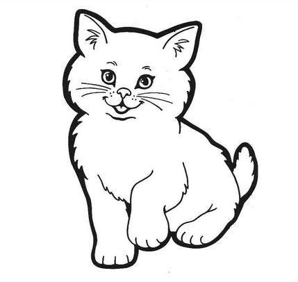

二月概述
刚满月的宝宝对自己的身体还几乎是未知的，所有的动作都是无意识的，所以在新生儿阶段，要通过被动活动，对大小肌肉、各个感官进行刺激，帮助宝宝对自己的身体有所认知，并慢慢学习主动使用身体。宝宝的视力如同大“近视眼”，所以与宝宝互动一定要注意距离，如果太远，他们只能看到模糊的“怪影“，最佳距离在20-30厘米。宝宝的各个感官能力在最初几个月的发展迅速，并且这个月龄的心灵非常需要呵护和呼应，所以多陪宝宝玩耍吧。

 男孩
男孩
 女孩
女孩
2个月宝宝-育儿建议

宝宝出生已经一个月了，
这个时候的Ta需要什么呢？
生理需求
需要及时提供充足食物，也就是母乳。及时提供食物意味着他不光要吃，而且他要迅速吃到。由于婴儿大脑发育尚未完成，各种信号传导很慢。所以，当孩子开始哭的时候，其实他已经很饿了，如果提供乳汁的速度特别慢，孩子已经哭到喘不上气时，他就会琢磨“为什么妈妈不理我呢？”那么，如果孩子在这个阶段经常有这种感觉，他就会不信任妈妈。
注：为宝宝哺乳时，每次都要两侧轮流喂，或者每次哺乳换方向，一三五次喂左侧，二四六喂右侧，同时允许宝宝使用外侧的手抓握妈妈的衣服或者妈妈的手指（此为原始反射），如果是奶瓶喂养的宝宝也同样如此，不要把宝宝放在床上喂奶，要像喂母乳一样抱在怀里喂，并且左右轮流。还可以尽早让宝宝的小手参与抓握奶瓶（通过抓握反射帮助学习使用手部小肌肉）。
精神需求
积极给予拥抱抚触和及时回应。婴儿出生前，他在妈妈的子宫里时刻被舒适温暖的羊水包围与抚摸。所以，他出生后当然希望能保持那种时刻被温暖包围的感觉。我们理解他们的这种需求，但是不能一直抱着他。
我们可以给婴儿提供一个非常舒服但是很安全的床。假如他哭了，你可以抱一会，给他唱个歌，叫叫他的名字。如果他不哭了，就把他放下来，摇摇他拍拍他。如果哭了，就再抱起来。也就是说，虽然不能一直抱着他，但是，绝对不能忽视他想要拥抱的需求。刚出生的婴儿，他的哭泣和需求就是自然本性，及时的回应与满足不会骄纵他，只会给予他百分百的安全感和信任感。
另外，虽然婴儿不会说话，但是他们对于妈妈的情绪非常敏感。所以，除了给予食物之外，妈妈多跟孩子微笑、打招呼、说话，这种情感沟通的交流对于孩子而言也是获取安全感的重要途径之一。
满足需求的重要性
人类最初的信任源于这个时期的需要是否被满足以及满足的方式。因此，哺乳、能否即时哺乳、能否满足触觉需要、能否建立积极沟通是最初信任产生的关键。对于婴儿而言，妈妈就是全世界，信任妈妈也就等于信任世界。如果一个孩子信任妈妈、信任世界，他就会有足够的安全感面对世界、探索世界。
2个月宝宝-医生提醒
初为人母的您，一定想给你最爱的世界上最好的一切，而对于新生儿来说，最好的首先就是“母乳”，就像女人有生育的天性一样，生了宝宝就会自然有乳汁，而乳汁就是新生儿头6个月里，最天然的、最有价值的、近乎完美的唯一食物。
世界卫生组织提倡：
母乳喂养是为婴儿健康生长和发育提供理想的食品和营养的无与伦比的方式，同时也是生殖过程的基本组成部分和母亲健康的重要指标。对依据的审查显示，在一定的人口基础上，长达6个月的纯母乳喂养是婴儿喂养的最佳方式。此后，婴儿应当在持续母乳喂养的基础上接受补充食品直到2岁或更久。
为了使母亲能够开始并维持长达6个月的纯母乳喂养，世卫组织和儿童基金会建议：
- 在婴儿诞生一小时之内开始母乳喂养；
- 纯母乳喂养：即不喂给婴儿除母乳之外的任何食物或饮料，甚至不喂水；
- 根据需要进行母乳喂养：即无论白天或是晚上，婴儿一旦有需要就要进行喂养；
- 无需奶瓶、橡皮奶头或安慰奶嘴。
母乳是婴儿的天然首选食品，它为婴儿出生后最初几个月提供了所需的能量和营养素，在婴儿1岁前的后半年，母乳也满足了一半或更多的婴儿营养需要，而且在婴儿2岁的这一年中，母乳可提供三分之一的营养。 母乳有利于感觉和认知的发育，并且防止婴儿患传染病和慢性疾病。纯母乳喂养也可以降低婴儿因腹泻或肺炎等常见儿童期疾病的死亡率，并且帮助婴儿在患病以后快速康复
因此，切勿相信配方奶粉的营养成分比母乳好的传言，而坚持给予6个月内的宝宝纯母乳喂养。
除了婴儿生产发育第一重要的母乳之外，婴儿发育还有一重要因素，就是——爱抚。
所以从出生后的第一天开始，就应该坚持每日抚触，尤其是剖腹产的孩子，因为错过了自然出生这一最强有力的学习机会，所以要更多加强抚触训练。
触摸是新生儿最早的语言，是婴儿最初的交流手段，在早期母婴关系的形成中起着非常重要的作用。通过按摩婴儿，你既传递了情感，也满足了孩子对身体接触的需要。按摩的益处既是感情上的，也是身体上的，它能使婴儿全面健康地成长。
而抚触也是最好的情感交流的机会，在妈妈温柔的微笑、轻柔的爱抚中，宝宝能够收获很多：
- 按摩婴儿能为母婴关系建立特殊的信心和信任感。
- 按摩让父亲更多地接触孩子，使他们有机会增强与婴儿的联系，有信心学会照料孩子。
- 定时按摩有助于减少血液里的应激激素。应激激素的减少可以维持在两次按摩之间。
- 按摩能够刺激婴儿体内释放内啡肽。内啡肽有镇痛作用。它与应激激素协同作用，会给婴儿带来全身的舒适感觉。
- 在按摩婴儿的同时，你们还在进行目光交流、亲吻、抚摸、声音交流。这些都会密切母婴关系，增加相互的感情依恋。
妈妈给宝宝做抚触，不用像中医理疗一样要求非常专业的技法，最重要的是妈妈自身的情感和爱的表达。而手法可以是：轻轻擦过皮肤、按压揉捏、手指轻轻弹、空手心轻轻叩、用按摩球之类的工具抚触等等。
在宝宝的第二个月里，坚信不疑的提供母乳，每日坚持爱抚，宝宝一定会一天一个样儿的。
2个月宝宝-启智游戏
 首都儿科研究所
首都儿科研究所
刀京晶医生为宝宝推荐

小猫喵喵叫
（综合能力游戏）
活动材料
小猫玩偶、小猫黑白图卡、润肤露

活动内容

训练目标
- 大肌肉运动：
- 精细运动：
- 感官发展：
- 语言:
- 社交：
俯卧、四肢可以短时支撑身体
激发抓握反射，发展小肌肉张力；
触觉：绒毛抚触，形成身体意识及触觉敏锐度；
视觉：黑白卡培养视觉认知，卡片移动训练视觉追踪；
听觉：听到妈妈的声音和儿歌的韵律；
内耳前庭：头部移动和抬头刺激内耳前庭发展；
儿歌是良好的语音输入；
妈妈的微笑和温柔都让宝宝感受到安全与温暖，形成依恋
活动过程
1.妈妈用小猫玩偶的绒毛轻抚宝宝身体，从宝宝头部开始慢慢抚摸宝宝的身体直到脚趾；妈妈边抚摸边念童谣：
小花猫喵喵叫，爱吃鱼爱蹦跳，
毛儿柔软眼睛俏，安静温柔懂礼貌
2.将小猫图卡放在宝宝面前大概30厘米的距离，左右移动缓慢，注意让宝宝的眼神聚焦在小猫身上，如果宝宝不看图片，可以轻轻抖动纸张发出声音吸引宝宝注意力。
3.用毛绒玩具逗引宝宝的手进行抓握，按压脚部刺激蹬踏。
4.将宝宝翻转至俯卧位，用小猫玩偶的绒毛从头到脚抚触宝宝背部，同时念童谣，抚触结束，重复图卡。
小花猫喵喵叫，爱吃鱼爱蹦跳，
毛儿柔软眼睛俏，安静温柔懂礼貌
注意事项
1、在宝宝两餐之间进行游戏，避免身体不适；
2、房间安静温暖，确保可以吸引宝宝注意力；
3、妈妈手部确保光滑温暖，可以适当使用润肤露；
4、注意小猫玩偶保持清洁，并且与眼睛鼻子嘴保持距离；
5、移动幅度不要超过45度，移动速度要慢；
6、剖腹产的宝宝因没有经过产道挤压，要加强抚触；
7、妈妈表情要温柔，多微笑，与宝宝表情多呼应；
8、全部过程持续5分钟。
2个月宝宝-启智游戏
首都儿科研究所
刀京晶医生为宝宝推荐
小飞机
（综合能力游戏）
活动材料
小飞机图卡（可以张贴在房间各处）
活动内容
训练目标
- 大肌肉运动：
- 精细运动：
- 感官发展：
- 语言:
- 社交：
俯卧-四肢可以短时支撑身体平衡，背部颈部力量；
双手撑地-手指小肌肉的训练；
触觉：背部抚触，形成身体意识及触觉敏锐度；
视觉：彩色卡片培养视觉认知，卡片移动训练视觉追踪；
听觉：听到妈妈的声音和儿歌的韵律；
内耳前庭：小飞机飞翔带来大量内耳前庭刺激；
儿歌是良好的语音输入；
妈妈的微笑和温柔都让宝宝感受到安全与温暖，形成依恋。
活动过程
1.宝宝俯卧（轻抚宝宝手背，宝宝的手会自动张开，顺势将宝宝手掌在张开状态下扶床面），妈妈用双手从宝宝头部到脚部进行抚触，边抚触边读儿歌：
小飞机，飞呀飞，飞到东来飞到西
宝宝快快来长大，长大来开大飞机
2.将小飞机图卡放在宝宝面前大概30厘米的距离，左右移动缓慢，注意让宝宝的眼神聚焦在小飞机上，如果宝宝不看图片，可以轻轻抖动纸张发出声音吸引宝宝注意力。
3.妈妈将双手从宝宝左右两侧插入宝宝身体下面将宝宝面朝下抱起，用托宝宝胸部的手的大拇指和食指张开托住宝宝下颌，将宝宝上半身微微上扬，利于宝宝抬头，然后在房间中抱着宝宝“飞行”，边飞边读儿歌。飞行过程中可以直线飞行、转圈、提升高度、下降高度。
4.爸爸随着欢快的音乐在房间中“飞行”，妈妈抱着宝宝追随爸爸“飞行”，“飞行”中爸爸可以双手拉宝宝双手做飞机翅膀状。
5.妈妈抱着宝宝缓缓“降落”在床面，再从头部到脚部缓慢按摩，并读儿歌：
小飞机，飞呀飞，飞到东来飞到西
宝宝快快来长大，长大来开大飞机
注意事项
1、注意在宝宝两餐之间，房间安静温暖，并妈妈手部确保光滑温暖；
2、卡片可以多打印几张，除一张在宝宝俯卧在床上使用，其余可以粘贴在房间各处；
3、抱着宝宝在房间中飞行之前，一定要确保房间内没有障碍物，预防摔倒，并且妈妈脚上要穿不易脱落的鞋子；
4、抱着宝宝“飞行”时一定移动速度要慢，并且要留意宝宝的表情，如果宝宝表情恐惧、痛苦，要立刻停下来。
5、爸爸与宝宝面对面“飞行”时，表情要夸张，与宝宝表情呼应。
6、全部过程持续8分钟。

贝智生0-3岁健康发育测评
儿童行为发育能反映出婴幼儿大脑功能发育的情况。健康发育测评系统可以帮助家长在日常生活中有目的的观察孩子的行为表现，了解孩子发育状况的快慢与进步，及时有针对性的进行促进与指导。为孩子提供最好的养育环境，与儿童共同成长。
根据测评结果
更好的为宝宝推荐适合的训练方案
2个月宝宝-启智游戏
彩色头巾
（综合能力游戏）
活动材料
透明纯色纱巾（颜色鲜艳）
活动内容

训练目标
- 大肌肉运动：
- 精细运动：
- 感官发展：
- 语言:
- 社交：
俯卧支撑训练大肌肉运动；
用手抓丝巾刺激抓握反射，训练小肌肉力量
触觉：丝巾抚触，形成身体意识及触觉敏锐度；
视觉：彩色培养视觉认知，丝巾移动训练视觉追踪；
听觉：听到妈妈的声音和儿歌的韵律；
内耳前庭：头部移动和抬头刺激内耳前庭发展；
妈妈一边做一边说，是很好的语言输入；
妈妈的微笑和温柔、紧紧的拥抱、游戏陪伴都让宝宝感受到安全与温暖，形成依恋。
活动过程
1.宝宝仰卧，妈妈拿一块纯色纱巾（最好透明），用手握住纱巾从宝宝头部到脚部进行抚触，边抚触边说：这是宝宝的头顶、脑门、脸蛋儿、小胳膊、小肚子……抚触到手部的时候，用纱巾接触宝宝的手掌，促使宝宝抓握。
2.将纱巾展开，挡在妈妈和宝宝之间，轻轻抖动纱巾，让纱巾晃动，妈妈将脸贴近纱巾，继续叫宝宝的名字，慢慢放低纱巾，露出妈妈的眼睛、鼻子、嘴巴——大大的笑脸。然后用纱巾盖在宝宝身体上，紧紧的拥抱，重复三次。
3.妈妈将纱巾铺在宝宝的身体下面，放上一首好听的儿歌，随着音乐节奏，慢慢的将宝宝一侧的纱巾拉起，宝宝的身体的一侧会随之被抬起，大约30度，慢慢放回，换另一侧。双侧重复三到五次。
4.将宝宝翻成俯卧，妈妈用手握住纱巾从宝宝头部到脚部进行抚触，边抚触边说：这是宝宝的头顶、脖子、后背、小屁股、大腿、小腿、小脚丫……抚触到脚部的时候，用纱巾按压宝宝的脚掌外延，刺激巴宾斯基反射。最后将纱巾展开覆盖宝宝的整个身体，再轻轻拉住纱巾的一头，将纱巾慢慢拉走，让纱巾轻抚过宝宝的全身。
5.妈妈与俯卧的宝宝面对面，将纱巾团成团，扔起来自由落下，吸引宝宝的视觉进行观察。
注意事项
1、注意在宝宝两餐之间，房间安静温暖，并妈妈手部确保光滑温暖；
2、纱巾一定要质地柔软，最好是单一颜色，不要太过花哨，刺激一定要柔和不要过度；
3、播放音乐应以欢快儿歌或者古典音乐、轻音乐为宜，切不可播放过于刺激的摇滚乐等，并注意音量不要过大；
4、左右摇动宝宝的时候切记速度要缓慢，并且要保持和宝宝对视。
5、全部过程持续5分钟。
2个月宝宝-育儿课堂
首都儿科研究所
刀京晶医生为宝宝推荐
伸手够物
课程简介：课程演示了“伸手够物”游戏的详细步骤及要领，并说明了当游戏完成后给予宝宝鼓励的方法。
 本条视频课程/5元(限时免费)
本条视频课程/5元(限时免费)讲师介绍
刀京晶，从事母婴科研工作20多年，在多年科学研究工作中，积累了丰富的专业经验，擅长母婴的各类营养和儿童保健指导。
2个月宝宝-育儿课堂
学骑大马
课程简介：课程演示了“学骑大马”游戏的详细过程，并特别提出了在游戏过程中的需要注意的细节。
本条视频课程/5元(限时免费)讲师介绍
刀京晶，从事母婴科研工作20多年，在多年科学研究工作中，积累了丰富的专业经验，擅长母婴的各类营养和儿童保健指导。